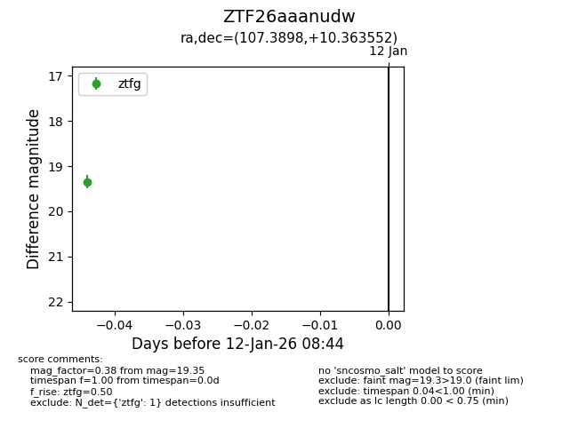
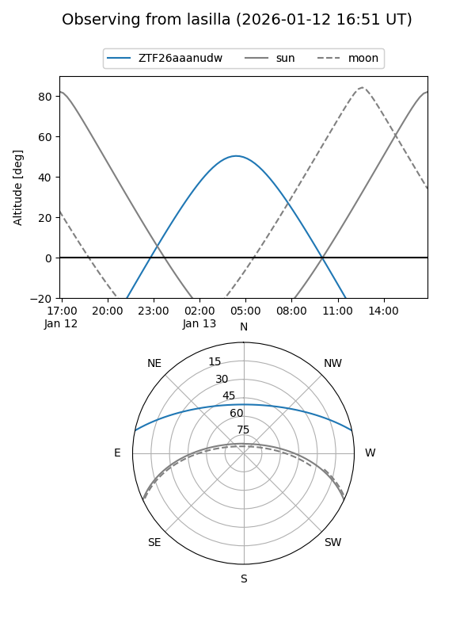

ZTF26aaanudw
Target ZTF26aaanudw at 2026-01-12 08:45
Aliases and brokers:
FINK: link
Lasair: link
ALeRCE: link
alt names
ZTF26aaanudw (ztf,fink_ztf)
Coordinates:
equatorial (ra, dec) = 107.3898,+10.36355
equatorial (HMS+DMS) = 07:09:33.55,+10:21:48.79
galactic (l, b) = (205.6863,+8.69526)
Flags:
Photometry:
last ztfg=19.35
1 ztfg detections
Lightcurve

Visibility


Additional plots